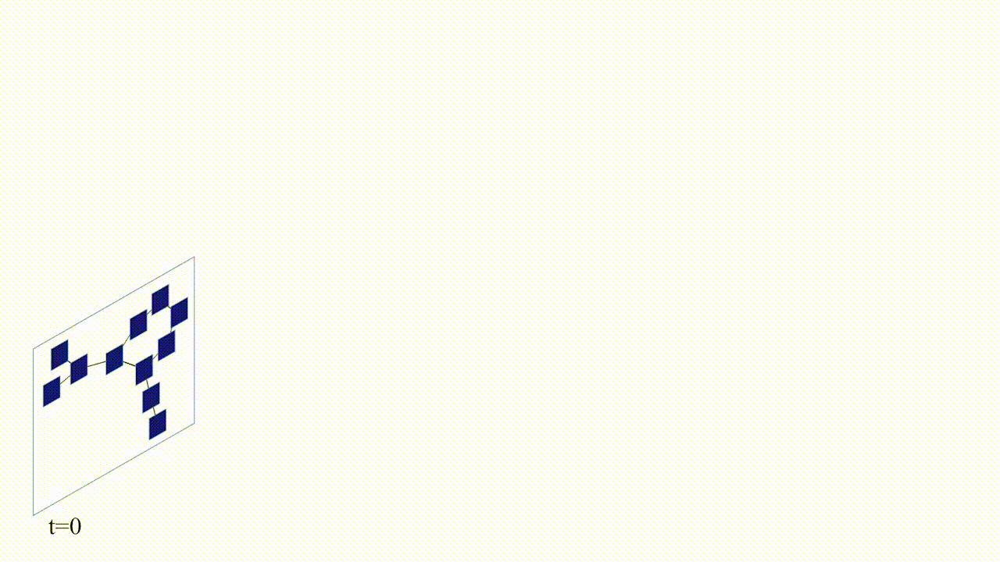
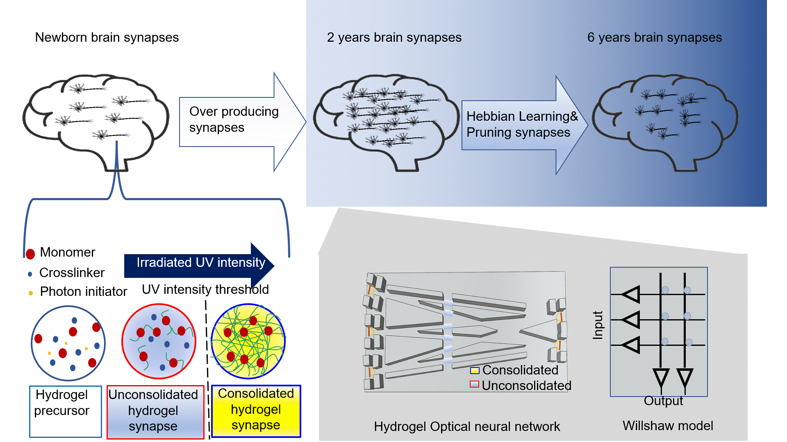
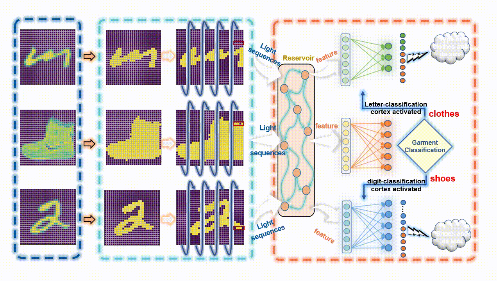

Intelligent Agents
SUSTech Intelligent Agents Lab (PI: Dr. Zhongrui Wang) at SUSTech SME works on AI agents and in-memory computing architecture for agenets.
PhD, Postdoc, and RA openings are available. Candidates with interest on machine learning accelerator, neuromorphic hardware, and AI for science are welcome to email your CV to wangzr@sustech.edu.cn.
Work Highlights

Echo state graph neural networks with analogue random resistor arrays
Nature Machine Intelligence 5, 104 (2023)
An organic electrochemical transistor for multi-modal sensing, memory and processing
Nature Electronics 6, 281 (2023)

Structural plasticity based hydrogel optical neural network
InfoMat 5, e12399 (2023)

Wearable In-sensor reservoir computing using optoelectronic polymers with through-space charge-transport characteristics for multi-task learning
Nature Communications 14, 468 (2023)